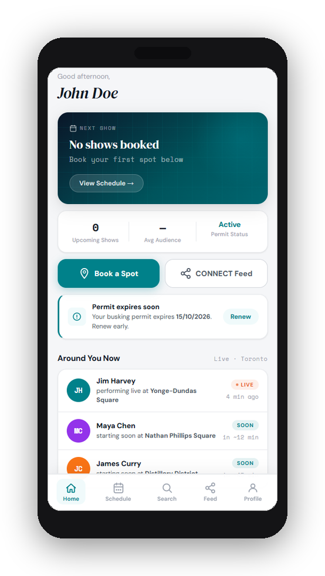
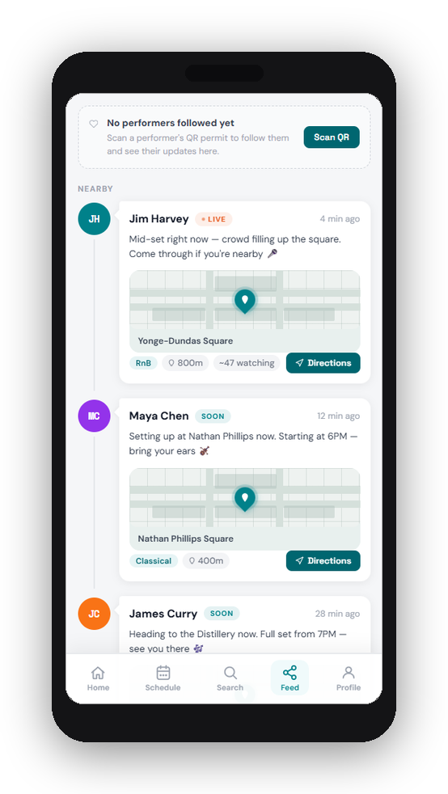
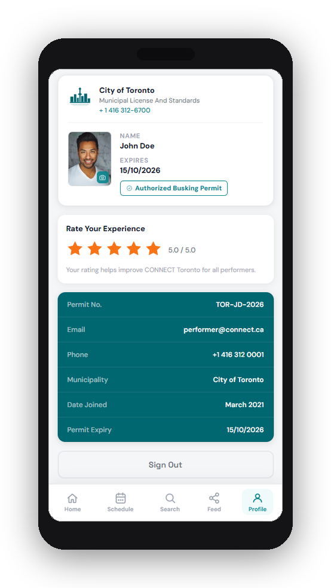
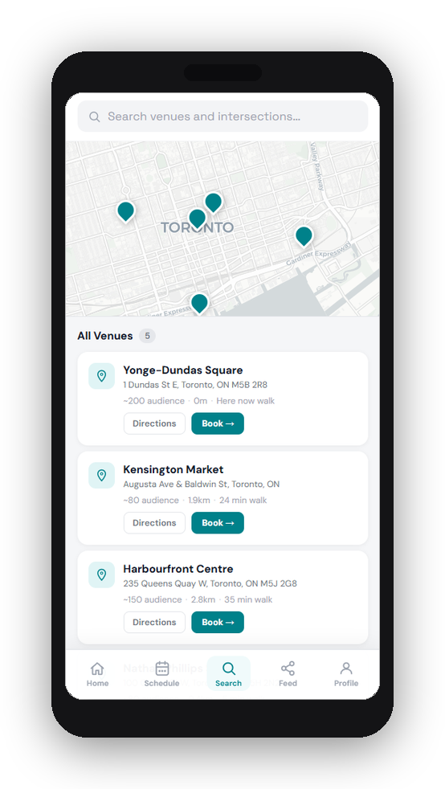
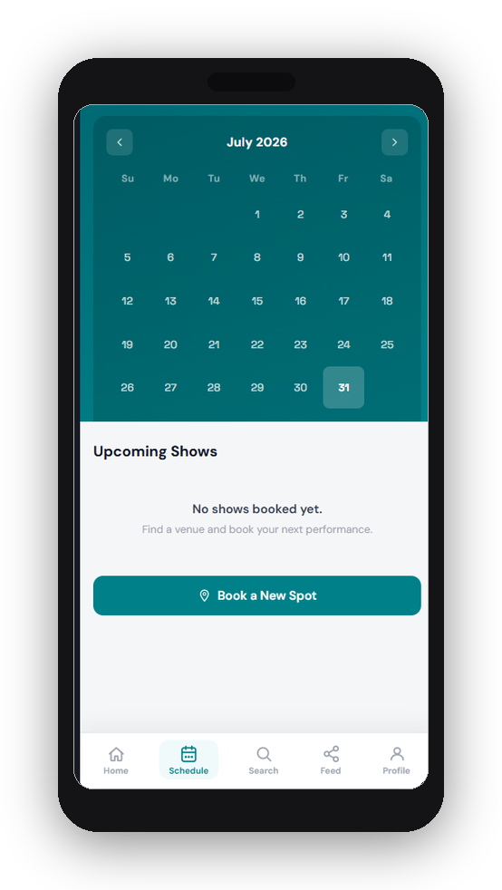

The Problem
Yonge-Dundas Square, Nathan Phillips, Distillery, Kensington, Harbourfront — each run by a different body, each with its own process. No performer has a single place to book, manage, and prove their work.
The audience problem is just as bad. There is no way to know a performer is playing nearby, no way to follow someone you stumbled upon, no way for a transient street moment to become a persistent connection. Toronto has a street performance culture. It has no infrastructure for it.
What Was Built
Permit management, spot booking, and live discovery — one app, two sides.
- Performers: book spots across city venues, manage their schedule, carry a digital permit card
- Audiences: see who is performing live nearby, get directions, follow performers for future updates
- Around You Now — live feed of active and upcoming performances within walking distance
- Permit expiry alerts and renewal prompts built into the performer home

The Audience Side

Live updates. Exact distance. Directions in one tap.
- LIVE and SOON badges reflect real-time performer status
- Each feed card shows venue, genre, audience count, and walking distance
- Performers post directly from the app — no third-party required
- Follow state persists across sessions so returning audiences stay connected
The Feature Nobody Else Has
Scan a performer's permit card. Follow them instantly. See where they play next.
No comparable platform — not TfL Busk in London, not NYC's MUNY, not Singapore's BuskerBus (now defunct) — has a QR-to-follow mechanic. The permit card doubles as a discovery surface. A passerby who liked what they heard can scan the card, follow the performer, and get notified next time they go live — without either person needing to open Instagram.
It also gives performers something they've never had: verifiable proof of performance history. Schedules, follower counts, booking records. Useful for grant applications, artist visas, arts council funding — the kind of professional legitimacy the informal economy doesn't generate on its own.

Spot Booking & Schedule


Performers search available venues by location, see estimated audience size and walk time, and book a slot directly. The schedule view maps confirmed bookings against a calendar so there are no double-books and no surprises.
Strategy
The city is the goal. A BIA is the door.
- The City of Toronto moves on procurement timelines measured in years — the right first target is a BIA activation budget
- "We put your buskers on a live discovery map and measure foot traffic impact" is fundable for a marketing team long before it's a software contract
- Yonge-Dundas Square and the Entertainment District BIA are the two most viable initial pilots
- One BIA pilot with real data changes the entire conversation with Toronto Economic Development and Culture
Stack & Status